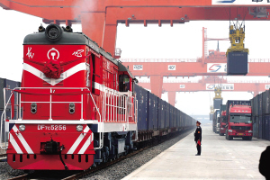
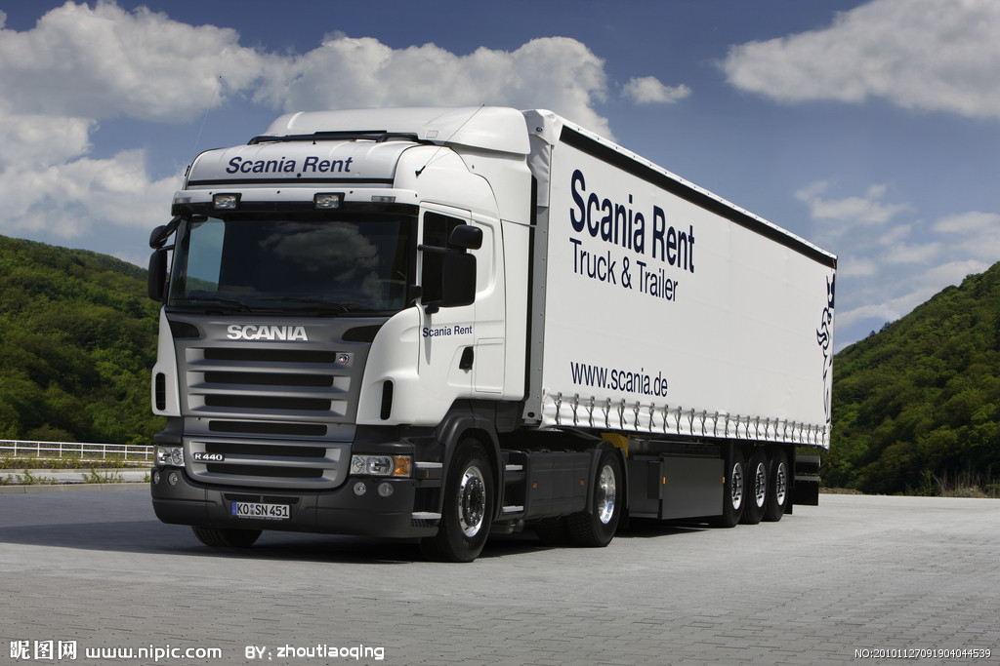
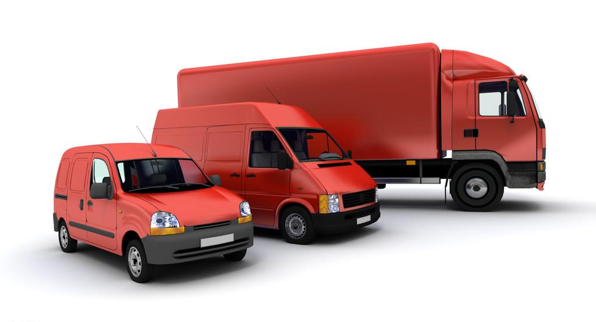

EL TRENSPORTE TERRESTRE
El transporte terrestre de mercancías
1. Transportista
Es la persona física o jurídica que dispone de autorizaciones y vehículos para
Efectuar el transporte de mercancías en servicio público.
Según las autorizaciones, se diferencian:
-Transporte local. -Dentro de la ciudad y sus límites.
-Transporte Provincial.-dentro de la Comunidad Autónoma.
-Transporte Nacional.-Entre distintos países.
-Transporte Internacional.-Entre distintos países.
Cualquier transportista puede ejercer una actividad inferior a la estipulada en su
Autorización de transporte, pero nunca una superior a la que esté destinada en la misma.
2. Empresa transitaria
Una empresa Transitariaa de transportes internacionales, tiene como objetivo disponer de líneas propias de transporte entre países y sus localidades o centros de carga. Reforzarlas y ampliarlas, aumentar el múmero de salidad y disponer de una flota de vehículos y de unas instalaciones provistas de los medios adecuados al cumplimiento de sus obligaciones de carga, manipulación y transporte, con el fin de poder ofrecer un servicio de calidad a los clientes en tienpos mínimos. La Transitaria, puede tener algunas líneas que no sean lo rentables que sería desear, sin embargo, si su volumen es importante podrá mantenerlas, pues lo que le interesa es la rentabilidad del conjunto de sus líneas e ir penetrando paulatinamente en las diversas aéreas geográficas. Es importante el volumen de carga.
A nivel general, el proceso consiste en agrupar mercancía en los almacenes, poner el camión oportuno, cargarlo, despacharlo de aduanas y falicitar al conductor del vehículo toda la documentación que sea necesaria, tanto propia como de los clientes, y dar la salida al camión.
Es muy importante optinizar las cargas para rentabilizar al máximo el camión, es decir, combinar mercancías muy pesadas y poco voluminosas, con mercancías de poco peso pero de gran volumen.
En el transporte terrestre por carretera la relación peso volumen, es 333 kilos por un metro cúbico. También se utiliza, 1 metro lineal de plataforma equivale a 1.750 Kg. Estas equivalencias se utilizan en la facturación. Esta relación se basa en la capaciad volumétrica del vehículo y la carga a transportar. Así por ejemplo 75 m3 a 1/3 equivale a 20 Tn, 1 Tn equivale a 333 Kg.
El tránsito de mercancía por carretera va creciendo día a día en el marco europeo, en franca competencia con el transporte aéreo tanto por precio como por rapidez.
Tanto la Empresa Transitaria como la Empresa de Transportes, están reguladas por la LOTT, Ley de Organización del Transporte Terrestre 16/1987, adecuándose esta normativa a las directrices de la UE.
El reglamento de la Ley de Ordenación de los Transportes Terrestres consolida la figura del Agente Transitario, individuo o perona jurídica que no sólo se ocupa del desplazamiento de las mercancías de un lugar a otro sino que además dirige, controla y coordina todas las operaciones necesarias para la realización de los transportes internacionales de mercancías por cualquier medio o vía de comunicación. El carácter organizador viene recigido en los artículos 167 y 168 del Reglamento, reservándole como ámbito propio de su actuación la organización del transporte internacional o los que se efectúen el régimen de tránsito aduanero, así como los transportes nacionales o interiores siempre que sean continuación de un transporte internacional cuya gestión les haya sido encomendada.

Las funciones de las Empresas Transitarias son:
(1) Cumplir las formalidades administrativas ligadas al transporte internacional o al régimen de tránsito aduanero.
(2) Depositar o almacenar mercancías procedentes o destinadas al transporte internacional o en régimen de tránsito aduanero.
(3) Consolidar y desconsolidad mercancías.
(4) Coordinar las diversas fases del transporte con destino o procedencia internacional y, en particular, el tránsito, la reexpedicón, el transbordo y las diferentes operaciones terminales.
(5) Contratar la realización de los portes, con Empresas de transporte.
(6) Recibir, consignar y poner a disposición de los transportistas o de los destinatarios mercancías procedentes o destinadas al transporte interncional o en régimen de control aduanero.
El carácter de organizadores y las funciones desarrolladas es, lo que los diferentes de las empresas de transporte. Se les llama ¨Arquitectos del Transporte¨. Es una actividad de carácter técnico o profesional que a sus clientes, en condiciones normales, les sería costoso o ineficaz de realizar por si mismos.
Una Empresa Transitaria realiza los servicios siguientes:
(1) Actúa como operador del transporte internacional.
(2) Coordiona para el cliente: Los clientes de tranporte más adecuados según mercancía y destino.
(3) El embalaje.
(4) La apliación de las reglas del comercio exterior, en especial de las condiciones de entrega INCOTERMS.
(5) La materización de créditos por cuenta del cliente, como COD (Cash on delivered)
(6) Las entregas documentales.
(7) Contratación de seguros.
(8) Elegir los medios de transporte según contrato.
(9) Organizar y planear el grupaje de diversas mercancías en las mejores condiciones.
(10)Efectuar almacenaje y distribución.
(11)Emitir los ducumentos: CMR (carta de porte), FCR (certificado de recepción FIATA), FCT (Certificado de Transporte FIATA), FBL (conocimiento de embarque FIATA negociable para el transporte combinado), SDT (Declaración de Cargadores para el Transporte de Mercancías Peligrosas), en exclusiva para los miembros de FETEIA que es la Federación Española de Transitarios Expedidores Internacionales y Asimilados. Esta organización empresarial está constituida por asosiaciones de ámbito provincial ATEIA. Al propio tiempo, FETEIA es miembro de FEATA- Internacional Federation of Freihgt Forwarders Associations, también de CLECAT-Comité. De Liaison Européen des Comissionaires et Auxiliaires de Transport du Marché Commun.
Transport du Marché Commun, también emite, DDC (Declaración de Compromiso de Tránsito Comunitario) y la CMR (Carta de Porte Internacional)
(1) supervisar la ejecución del transporte en origen y destino.
(2) Coordinar las formalidades aduaneras.
(3) Poner corresponsales en el extranjero a disposición de los clientes.
(4) Poner corresponsales en el extranjero a disposición de los clientes.
(5) Apoyar a los importadores y exportadores facilitándoles su tarea.
3. Agentes corresponsales
Para poder tramitar con eficacia, garantía y rentabilidad el transporte TIR es imprescindible disponer de una buena red de corresponsales y contratos con transportistas de calidad cuando los camiones propios no son suficientes.
El corresponsal, es un Agente necesario, ubicado en cada país, para realizar las gestiones y tramitaciones necesarias, para la importación, la exportación y garantía de servicio a los clientes. Este tiene un buen conocimiento del mercado, ya que cada país tiene sus gustos, hábitos y costumbres. El Agente Corresponsal, es un canal de introducción en el mercado y de seguimiento de las mercancías hasta su desti,no final.
4. Contrato transportista-transitario
El Transportista suele establecer un contrato con un Agente Transitario al fin de asegurarse carga. Estos contratos suelen hacerse cuando existe una continuidad de servicio o bien se fija un camión en rotación. Los factores más importantes a destacar de un contrato son : Coste de kilometro suplementario. Número de rotaciones en un tiempo determinado. Tipo de vehículo contratado.
La Rotación responde al número de camiones que semanalmente transitan entre la Terminal del Transitario y su Agente Corresponsal en el extranjero. Lo mínimo necerario en una línea es tener, al menos, dos camiones en rotación, aunque el objetivo final es un camión diario.

5. Modalidaddes de transporte
Camión completo-Es el que está cargado con una sola partida, que suele ser una carga que ocupa todo el camión, tanto en espacio como en peso.
Camión Grupaje-Es el camión cargado con más de una partida.
Camión directo-es el transporte de mercancía en la cual no interviene el Agente corresponsal. Las cargas suelen ser completas.
Cocargas-Se denomina así, la entrega de mercancías a otro transitario, para que éste último haga el transporte por cuenta del primero.
6. Documentación para el transporte
Los documentos necesarios, tanto para la aduana de destino como para el Agente Corresponsal son:
El BORDEREAU o relación, es un documento emitido por el expedidor en el cual figuran todos los detalles necesarios, remitente, destinatario, bultos, mercancías, pesos, volumen, valores de las mercancías, condiciones de envío, matricula del camión, fecha de salida, gastos en origen y observaciones.
DOCUMENTOS de los clientes: facturas, certificados de origen, etc.
CERTIFICADO T, que es el certificado de tránsito comunitario de mercancías, en sus modalidades T-1 o T-2. Estos documentos T, se confeccionan para una o varias partidas. Si se trata de una agrupación de mercancías, es necesario adjuntar a dicho T, una lista de carga, detallado cada partida amparada en el mismo.
El C.M.R.,(contrato de Marchandise Routier o Carta de Porte) está basado en la Convención de Ginebra de 19 de mayo de 1956. El Convenio establece la responsabilidad del transportista en los casos de pértida total, parcial o de las averías que se produzcan desde el momento de la recepción de la mercancía hasta la entrega de la misma al destinatario, así como de los retrasos en la entrega. Este documento tiene la utilidad de afirmar la existencia de un contrato de transporte, tiene utilidad de afirmar la existencia de un contrato de transporte, tiene utilidad en caso de siniestri y sirve de albarán de entrega debiéndose anotar las anomalías ocurridas. El CMR, puede ser establecido para una sola partida o para todas las partidas conjuntamente. Los emisores de la CMR, pueden ser el Transitario, la Agencia de Transporte o el Transportista.
El contrato de transporte está basado en el CMR que regula toda la normativa del transporte por carretera en el plano internacional, actuando como tal.
Este documento, que se extiende en original y tres copias, sirve, además de contrato de transporte, como:
-Declaración y descripción de la mercancía.
-Disposiciones adicionales sobre el transporte.
-Certificado de recepción.
-Talón de recibo.
En el tráfico de grupaje es el transitario el que utiliza el ejemplar CMR como compreobante de transporte, entregando a los distintos ordenantes o exportadores el correpondiente Certificado de Recepción.
Todos los transportistas están, en principio, obligados a cubrir un seguro de responsabilidad civil para el recorrido internacional del transporte de toda la mercancía transportada. Lamentablemente eso no siempre es obligatorio en todos los países siendo estos límites a veces muy distintos.
La limitación de responsablilidad de daños sobre la mercancía, según el Convenio CMR, equivale a 8,33 DEG por kg.
Antes de contratar cualquier camión, debería ser requisito imprescindible, la comprobación de la existencia del seguro CMR.
El transportista, en delegación del conductor, es responsable de verficar la exactud de las menciones de la Carta de Porte-CMR relativas al número, marcas de paquetes y estado aparente de la mercancía y de su embalaje.
En caso de indicación errónea o falsa, debe mencionarlo sobre la Carta de Porte. Si el transportista no hace reservas sobre el estado del embalaje o defecto del mismo, los daños serán por su cuenta, puesto que aportaría la prueba de que el daño se ha producido entre el momento de la toma de la mercancía y su posterior entraga en destino.
Cuando la mercancía es entregada por el tranportista en malas condiciones, faltas, etc., las anomalías deben hacerse constar en el CMR de forma inmediata por el recptor de la misma, igualmente en caso de que las faltas o deterioro sea importante deber hacerse constar las circunstancias mediante la actuación y peritaje de un Comisario de Averías, todo ello con el fin de efectuar la reclamación a que hubiera lugar.
Es conveniente fijar siempre el plazo máximo de entrega de la mercancía, remarcando este detalle en el CMR, con lo cual evitaremos problemas y facilitaremos la reclamación a que hubuera lugar.
Dentro de las peculiaridades del transporte terrestre, el vehículo tiene un plazo máximo, para proceder al despacho de la mercancía, de 24 horas, a partir de las cuales el transportista puede exigir una penelización por paralización de unos 150 Euros por día transcurrido.
En cuanto a los conductores su responsabilidad alzanza a: Estar presente en las cargas y descargas, vertificando y controlando. Es responsable de la seguridad del vehículo y de las mercancías. Debe cumplir los horarios. Estar presente al precintado del camión. Respomsabilizarse de los documentos e instrucciones. Realizar los controles aduaneros. Comprobar la exactitud de la Carta de Porte y mencionar las anomalías observadas. En ningún caso, se puede obligar a un conductor a cargar o descargar el camión.
7. Convenio TIR
Se define como TIR (Transport International Routier), el transporte internacional de mercancías por carretera, con vehículos apropiados a la carga, para el tránsito de las mismas de un país a otro.
Actualmente, Europa cuenta con una importante red de carreteras dando a esta modalidad de transporte una gran rapidez y flexibilidad así como la versatilidad de vehículos existentes aptos para casa todo tipo de carga.
El Convenio Aduanero relativo al Transporte Internacional de Mercancías sl amparo de los cuadernos TIR-Convenio TIR, firmado en Ginebra el 14 de noviembre de 1975, redactado en francés, inglés y ruso, publicado en el BOE de 9 de febrero de 1983 y puestas en circulación por el Secretario general de las Naciones Unidas el 21 de enero de 1992, publicado en el BOE no 133 de 4 de junio de 1993 las Enmiendas al Convenio de 5 y de 27 de junio de 1997(BOE no 14 de 16-1-97 y no 31 de 5/2/99 )

Se entiende por ¨Operación TIR¨, el transporte de mercancías desde una aduana de partida hasta una aduana de destino.
Por ¨vehículo de transporte por carretera¨ incluye el vehículo a motor, el remolque o semirremolque.
Por ¨conjunto de vehículos¨ se entiende, los vehículos acoplados que participan en la circulación por carretera como una unidad.
Por ¨contenerdor¨ un elemento del equipo de transporte (cajón portátil,tanque movible u otro elemento análogo).
Las operaciones de transporte deberá efectuarse en vehículos de transporte por carretera, conjuntos de vehículos, o contenedores, previamente aprobados con arreglo a las condiciones previstas en el Convenio.
Las operaciones de trensporte deberán realizarse con la garantía de asociacisones autorizadas por el Convenio.
Las mercancías transportadas en régimen TIR no están sujetas al pago de derechos por las aduanas de paso, no estándo, en general, sujetos a inspección en esas aduanas.
La asociación garante se compromete a pagar los derechos y tributos de importación será responsable, mancomunada y solidariamente con las personas deudoras.
Cada cuadorno TIR tiene una fecha de validez y un importe máximo de cantidades a reclamar. Si en el transporte hay mercancías no declaradas en el Cuaderno TIR la responsabilidad también alzanza a éstas mercancías.
El convenio prevé, el modo de aprobación de los vehículos, las características, precintos y demás condiciones para ser admitidos al tráfico TIR.
Los países de la UE, así como los de AELC, no precisan este convenio.
8. Convenio CMR
Auspiciado por la ONU, tiene por función regular el tráfico internacional por carretera, en los aspectos de responsabilidad y documentación de los portes y mercancías. Fue firmado el 19 de mayo de 1956 en Ginebra, redactado en francés e inglés. Hay una traducción en lengua española en el BOE de 7 de mayo de 1974 como texto legal español. Existe modificación por Protocolo de 5 de julio de 1978.
Consta de 8 capítulos cuyo contenido es siguiente:
Capítulo I. – Se aplica a los transportes realizados a título oneroso, siempre que uno de los puntos de carga o descarga sea en país signatario del Convenio.
Capítulo II. – Trata de las responsabilidades de los actos de transportista, sus empleados y subcontratistas.
Capítulo III. – Referido al Contrato de Transporte. Hace especial mención de la Carta de Porte como documento contractual entre las partes.
Capítulo IV. – Responsabilidad del transportista ante daños, pérdidas y demoras.
Capítulo V. – Referido a los plazos para efectuar reclamaciones ante incidencias.
Capítulo VI. – Concreta la forma de repartir las responsabilidades cuando entervienen varios transportistas.
Capítulo VII y VIII. – Referido a casos de nulidad de cláusulas, firma y retificaciones.
El resumen de responsabilidades y reclamaciones es: la culpa presunta puede evitarse con prueba. La falta de embalaje o inadecuado se considera dolo. Las reclamaciones pueden ejercerse durante un año y si hay dolo 3 años. Las averías detectadas al momento de la entrega y las ocultas dentro de los 7 días salvo pacto en contra y más de 30 días se entiende pérdida. Las indemnizaciones son el importe del flete para los retrasos y por pérdidas y daños a razón de 8,33 DEG/kg. Las reclamaciones para la devolución de los fletes han de ejercerse ante los 15 meses del contrato de transporte.
9. Acuerdo ADR – Circulación de Mercancías Peligrosas por Carretera
El Acuerdo ADR firmado en Ginebra, data del 30 de septiembre de 1957 entrando en vigor el 29 de enero de 1968, enmendado por el Protocolo de Nueva York de 21 de agosto de 1975 que entró en vigor el 1 de enero de 1997. El BOE de 10 de junio de 1997, reproduce el texto.
El ADR es un cuerdo elaborado por la Comisión Económica de las Naciones Unidas para Europa, en Ginebre, mediante el cual los Estados de Europa han convenido reglas comunes para el transporte de mercancías peligrosas por carretera. Hay dos Anejos que datan de 1969, A y B. El anejo A regula el embalaje y etiquetado, enumera las mercancías objeto de transporte internacional y su descripción en la carta de porte, siendo responsable el expedidor de cumplir esos requisitos. El Anejo B, regula la construcción, equipamiento y explotación de los vehículos, estableciendo las normas aplicables a los vehículos y las operaciones de transporte, de las que el transportista es responsable.
|